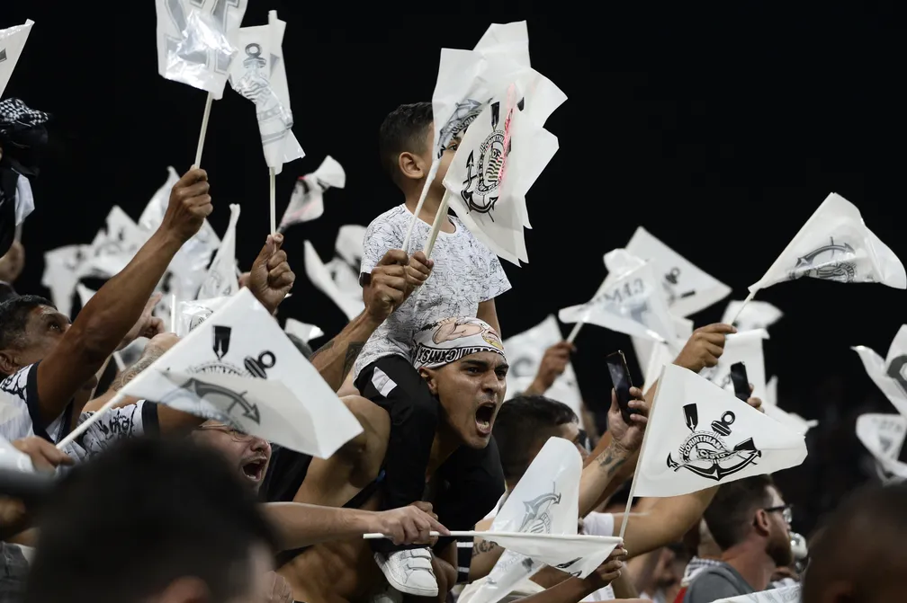
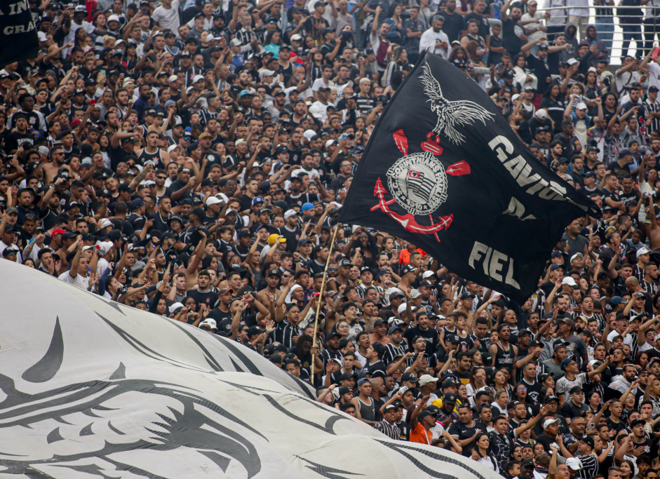

Com uma base de torcedores que ultrapassa os 30 milhões, o Corinthians ostenta a maior torcida de futebol do Brasil e uma das maiores do mundo. O corinthiano é conhecido por sua dedicação inabalável ao Timão e não mede esforços para estar presente nos jogos de seu time, mesmo que isso signifique atravessar continentes para ver o Corinthians em ação.
Viagens emocionantes, gestos de devoção, tatuagens marcantes e inúmeras histórias de amor à camisa corintiana são apenas alguns dos aspectos que compõem a rica tapeçaria do clube.

Gaviões da Fiel
O Grêmio Gaviões da Fiel Torcida é reconhecido como a maior torcida organizada do Sport Club Corinthians Paulista, e também é considerada a maior organizada em todo o Brasil. Com um número impressionante de 115 mil sócios registrados em dezembro de 2018, a torcida possui uma extensa rede de atuação que inclui uma sede social e dez subsedes, distribuídas em nove cidades brasileiras e uma localizada no Japão. Suas fontes de receita abrangem mensalidades, operações de bares, cantinas, lojas físicas e virtuais, além de eventos relacionados ao clube.
No contexto do Carnaval, os Gaviões da Fiel se destacam com sua atuação desde 1975, quando criaram o Bloco Carnavalesco. Nesse período, conquistaram impressionantes 12 títulos em 13 anos de participação no Carnaval. Em 1988, receberam o convite da Liga das Escolas de Samba para competir no grupo especial, onde também se destacaram, conquistando quatro títulos no Carnaval de São Paulo. Com um desfile que envolveu 3.500 componentes em 2019, eles se tornaram a atração com a maior audiência televisiva e a maior torcida presente no Anhembi. A fonte de receita para essa atividade inclui patrocínios e ensaios preparatórios.

Mundial de 2012
Por toda a região metropolitana de Tóquio, considerada a mais populosa do mundo, a presença marcante dos torcedores corintianos durante a final da Copa do Mundo FIFA de Clubes de 2012 não passou despercebida. Eram visíveis nos metrôs, trens, atrações turísticas e aglomerações pela cidade, destacando-se como um fenômeno inconfundível. A presença massiva de cerca de 30 mil corintianos no estádio de Yokohama durante o jogo contra os campeões europeus do Chelsea foi notável. O fervoroso apoio do autodenominado "Bando de Loucos" reverberou ensurdecedoramente, criando uma atmosfera intimidadora e validando o conceito de 12º jogador para a equipe comandada por Tite. O Corinthians emergiu vitorioso com um placar de 1 a 0, graças ao gol de Paolo Guerrero, às impressionantes defesas de Cássio e à dedicação incansável em campo.
A presença maciça dos torcedores corintianos no Japão durante o torneio foi notável, com o governo japonês concedendo oficialmente 10 mil vistos temporários a cidadãos brasileiros nos dois meses que antecederam a competição. Embora não seja possível afirmar que todos esses vistos tenham sido emitidos exclusivamente para corintianos, a comparação com períodos anteriores sugere que a grande maioria deles estava relacionada aos torcedores do clube. Por exemplo, ao longo de todo o ano de 2011, foram emitidos apenas 16 mil vistos para brasileiros, o que destaca o impacto notável da presença da torcida corintiana na competição. O goleiro corintiano, Cássio, que desempenhou um papel fundamental na vitória, expressou profunda gratidão aos torcedores, destacando sua dedicação e apoio inabalável à equipe durante todo o torneio
“O troféu é uma retribuição ao torcedor corintiano pelo carinho que deu à equipe. Aqueles que vieram e aqueles que não puderam estar aqui fisicamente, mas estavam presentes em espírito e alma.”